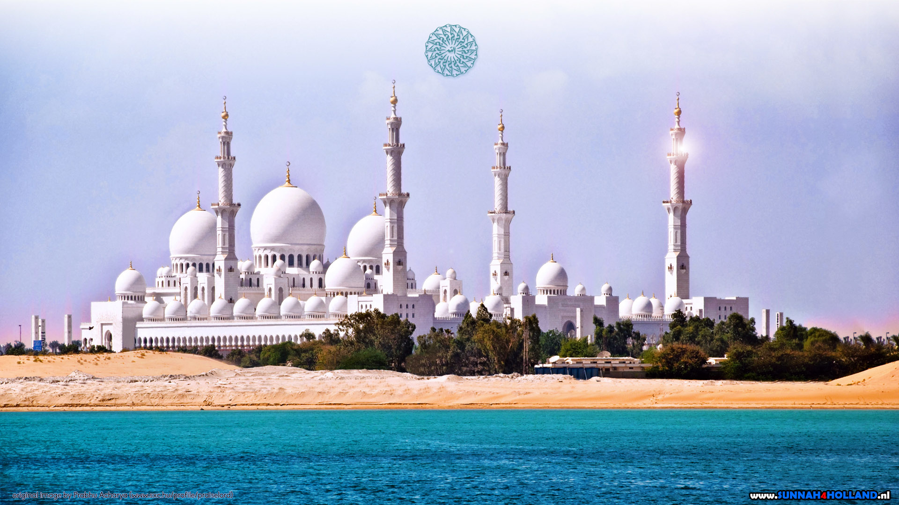

Our Makkah

মক্কা ইসলাম ধর্মের পবিত্রতম নগরী হিসেবে স্বীকৃত। এই শহরে মুহাম্মদ (সাঃ) এর জন্ম এবং এখানেই তিনি কুরআনের প্রথম ওহী লাভ করেন (বিশেষভাবে, হেরা গুহায় যা শহর থেকে ৩ কিলোমিটার দূরে)। মুসলিমরা প্রতি বছর হজ্জ্ব ও উমরাহ পালনের জন্য এখানে আসেন। মক্কার প্রাণকেন্দ্রে কাবা অবস্থিত। ইসলাম ধর্ম অনুযায়ী কাবা হলো পৃথিবীর প্রথম মসজিদ। মুসলিমরা প্রতিদিন পাঁচ বার নামায আদায়ের সময় এই কাবার দিকে মুখ ঘুরিয়ে রাখেন। এটি তাদের প্রার্থনার সময় দিক নির্দেশ করে। দীর্ঘদিন এই শহর মুহাম্মদ (সাঃ)এর বংশধররা শাসন করেছে। ১৯২৫ সালে ইবনে সৌদ এর মাধ্যমে সৌদি আরব রাষ্ট্র প্রতিষ্ঠিত হলে সৌদ বংশ মক্কার দায়িত্ব লাভ করে। বর্তমানেও উক্ত রাজবংশ মক্কা শাসন করছে। আধুনিক যুগে এসে শহর বহুগুন সম্প্রসারিত হয়েছে। এর অবকাঠামো, রাস্তা-ঘাট, নাগরিক সুবিধা ইত্যাদির অনেক উন্নতি লক্ষ্য করা যায়। বিশ্বের চতুর্থ উচ্চতম ভবন মক্কা রয়েল ক্লক টাওয়ার এই শহরেই অবস্থিত। উক্ত ভবনের মেঝের আয়তন সারা বিশ্বে তৃতীয় বৃহত্তম।
Our Modinah
মদিনা (আরবি: المدينة, সরকারী ভাবে: المدينة المنورة আল-মদিনা আল-মুনাওয়ারাহ) অথবা মদিনাহ হিসেবেও একে আনুবাদ করা হয়ে থাকে। পশ্চিমী সৌদি আরবের হেজাজ অঞ্চলের একটি শহর এবং আল মদিনাহ প্রদেশের রাজধানী। এইটি ইসলামের দ্বিতীয় পবিত্র শহর যেখানে মুসলমানদের শেষ নবী হযরত মুহাম্মাদ সাল্লাল্লাহু আলাইহি ওয়া সাল্লামের রওযা। এইটি ঐতিহাসিকভাবে গুরুত্বপূর্ণ কারণ হযরত মুহাম্মাদ (সাঃ) হিজরতের পরে মদিনায় বসবাস করেছেন। নানান ঐতিহাসিক কারণে মদিনা অত্যন্ত গুরুত্বপূর্ণ । বিশেষ করে মুসলমানদের কাছে অত্যন্ত শ্রদ্ধেয় ও পবিত্র এই নগরীটি । ইসলামের প্রাচীনতম ও ঐতিহাসিক তিনটি মসজিদ যেমন মসজিদে নববী, কুবা মসজিদ (যেটি ইসলামের ইতিহাসে প্রথম মসজিদ ) এবং মসজিদ আল কিবলাতাইন (যে মসজিদে মুসলমানদের কিবলা পরিবর্তন হয়েছিল) অবস্থিত। হযরত মুহাম্মাদ (সা:) ৬২২ খ্রিস্টাব্দে তার সাহাবী আবু বকরকে নিয়ে পবিত্র মক্কা হতে মদিনার উদ্দেশ্যে হিজরত করেন। উমরের খিলাফতকালে সে স্মৃতির উপর ভিত্তি করে ইসলামি বর্ষপঞ্জি প্রতিষ্ঠিত হয় যা হিজরী সাল নামে পরিচিতি লাভ করে। নবীজি (স:) এর মদিনায় হিজরতের পরে যে পবিত্র কুরআনের বাণী নাযিল হয়েছিল তাকে মাদানী সূরা বলা হয় ।
Our Kurigram
কুড়িগ্রাম জেলার নামকরণের ইতিহাস নিয়ে অনেক কিংবদন্তি রয়েছে। এ বিষয়ে প্রশ্নাতীত বা সন্দেহমুক্ত কোন তথ্য পাওয়া যায়নি। সবই কিংবদন্তি ও প্রচলিত লোকশ্রুতি। তার কিছু কিছু বিষয় সমর্থনযোগ্য মনে হতে পারে। জানা যায়, কোন এক সময় মহারাজা বিশ্ব সিংহ কুড়িটি জেলে পরিবারকে উচ্চ শ্রেণীর হিন্দুরূপে স্বীকৃতি দিয়ে এ অঞ্চলে প্রেরণ করেন। এ কুড়িটি পরিবারের আগমনের কাহিনী থেকে কুড়িগ্রাম জেলার নামকরণ করা হয়েছে বলে ধারণা করা হয়। বিলু কবীরের লেখা 'বাংলাদেশের জেলা নমকরণের ইতিহাস' বই থেকে জানা যায়, এখানে কুড়িটি মেচ্ তৈলজীবী পরিবারের বসতি ছিল বলে এ রকম নামকরণ হয়েছে। অন্য আরেকটি লোকশ্রুতি হলো : রঙ্গপুর অর্থাৎ এই অঞ্চল একদা ছিল কুচবিহার রাজ্যের অন্তর্গত। কুচবিহারের বাসিন্দাদের বলা হয় কোচ। এরা তিওড় গোষ্ঠীবিশেষও। মাছ ধরে বিক্রি করা তাদের পেশা। সুবিধাবঞ্চিত নীচু শ্রেণীর এই হিন্দু কোচদের কুড়িটি পরিবারকে সেখান থেকে এখানে প্রেরণ করা হয়েছিল বা আনয়ন করা হয়েছিল বসতি স্থাপনে জন্য। ওই কুড়িটি কোচ পরিবারের কারণে 'কুড়িগ্রাম' নামকরণ হয়েছে। আবার এমনও জানা যায়, এই গ্রামে কুরি বা কুরী নামক একটি হিন্দু আদিবাসী বা নৃগোষ্ঠী বসবাস করত বলেই অঞ্চলটির নাম হয় 'কুড়িগ্রাম'। অদ্যাবধি এখানে 'কুরি' নামক আদিবাসী ক্ষুদ্র নৃগোষ্ঠীর বসবাস লক্ষ্য করা যায়। এখানো এ অঞ্চলে কুড়ি হিসেবে গোনার পদ্ধতি চালু রয়েছে। বিশিষ্ট পণ্ডিত জা পলিলুস্কি প্রমাণ করেছেন, গণনার এ পদ্ধতি বাংলায় এসেছে কোল ভাষা থেকে। কোল অস্ট্রিক ভাষাগোষ্ঠীর অন্তর্গত। আরব অস্ট্রিক ভাষায় কুর বা কোর ধাতুর অর্থ হলো মানুষ। কুড়ি হিসেবে গোনার পদ্ধতিটিও এসেছে মানুষ থেকেই। এ অস্ট্রিক কারা? পন্ডিতদের মতে, প্রত্নপ্রস্তর যুগে এ অঞ্চলে বাস করত নিগ্রো জাতি। এরপর আসে নব্যপ্রস্তর যুগ। আসামের উপত্যকা অতিক্রম করে আসে অস্ট্রিক জাতীয় জনগোষ্ঠী। তারপরে আসে দ্রাবিড় ও মঙ্গোলীয়রা।